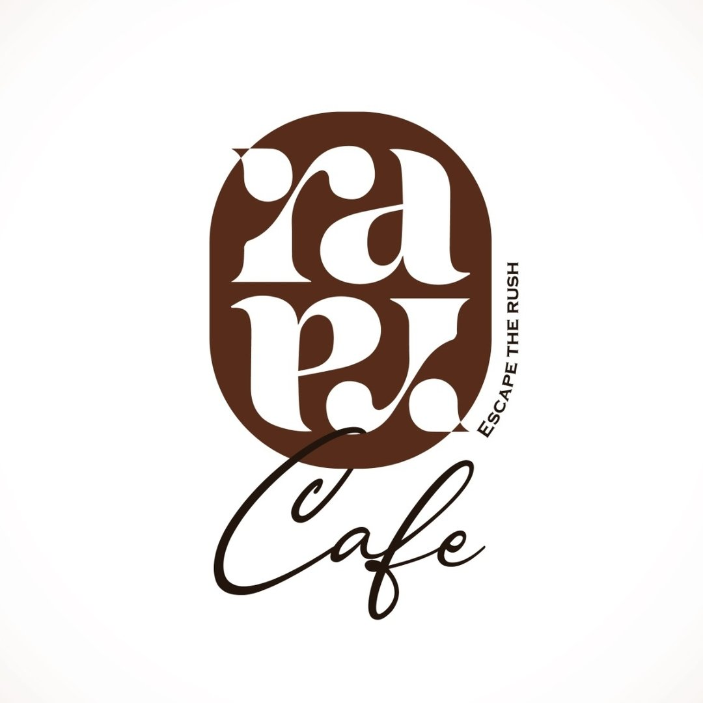

₹100
Daily budget

RaRa Cafe · Miryalaguda, Telangana
A 7-day, ₹700 hyperlocal campaign to put RaRa Cafe in front of every Meta user within reach of the door, on Facebook and Instagram.
What's inside
What "Brand Awareness / Reach" actually optimizes for, and why it fits a local cafe.
What "1 km" means inside Meta's targeting tools, and the honest constraint to plan around.
₹100/day × 7 days, mapped to expected reach and frequency.
Three creative concepts built for a reach objective, not a sales pitch.
Every account, asset, and access needed before this can go live.
Section · 01
Why Brand Awareness, not Traffic or Sales, is the right objective for this campaign.
Meta objective: Awareness → Reach
Meta's Reach objective optimizes delivery to show the ad to as many unique people as possible inside the target audience, at the lowest cost per person reached. It does not optimize for clicks, page views, or orders. That is the correct choice here: the goal is awareness inside walking/driving distance, not an immediate transaction.
A new-ish cafe with low local awareness, even within 1 km, awareness is the actual gap, not lack of intent.
₹700 total is too small to expect statistically reliable conversion data; reach and frequency are measurable at this spend, sales attribution is not.
Success here is "more people nearby now recognize the name and logo," which shows up later as walk-ins, Google searches, and Instagram follows.
Section · 02
What "1 km around the cafe" means once it hits Meta's actual targeting tool.
Important constraint, set correctly before launch
Meta Ads Manager's location-radius targeting has a hard minimum of 1 mile (≈1.6 km) around a pin. There is no way to draw a true 1 km circle inside the platform. The honest, precise way to execute "reach people within 1 km" is to set the pin exactly on RaRa Cafe and dial the radius to Meta's minimum, 1 mile, which is the tightest ring available and still keeps roughly two-thirds of its area inside the intended 1 km core.
The 1 km intent sits inside the 1-mile minimum ring. Address-level precision plus tight age/interest layering keeps delivery honest to the original intent even though the radius itself can't be drawn smaller.
Meta Ads Manager · Ad set targeting
Location pin
Drop pin on RaRa Cafe's exact address, Miryalaguda 508207
Radius
Platform minimum; tightest ring available, covers the 1 km core
Age range
Café/casual-dining demographic; widen later if reach is too small
Languages
English and Telugu, matching how locals actually browse
Section · 03
₹100/day for 7 straight days, spent evenly, not front-loaded.
Daily budget · standard pacing
Day 1 and Day 7 typically under-spend slightly while the algorithm calibrates and as the frequency cap throttles repeat impressions late in the run, this is normal and not a setup error.
Section · 04
Built for recognition, not conversion: face, name, place, vibe.
Creative brief for a reach objective
A reach ad's only job is to be instantly recognizable and memorable. No price, no hard sell, no fine print, just the name, the logo, the vibe, and the address sticking in someone's head the next time they're deciding where to get coffee.
Single static image: the actual storefront/interior at golden hour, logo overlaid bottom-third, "Escape the Rush" tagline, "Hanumanpet, Miryalaguda" as a location stamp.
Best for: Feed + Stories, lowest production effort, highest repeat-recognition value.
Short looping video (reuse Reel Script A footage if available): coffee being poured, steam rising, cut to logo end-card with address. Motion outperforms static in Stories/Reels placements.
Best for: Reels + Stories, higher recall per impression than a static image.
3-card carousel: best dish, signature drink, seating area, each card plain and uncluttered, last card is pure brand: logo, address, "Open daily 11am–10pm."
Best for: Feed, gives the algorithm 3 creative variants to test within one ad.
Primary text, headline, and CTA for each concept
| Concept | Primary text | Headline | CTA button |
|---|---|---|---|
| A · Signature Shot | "Right around the corner in Hanumanpet. Good vibes, better coffee. RaRa Cafe, Miryalaguda." | Escape the Rush, Just Down the Road | Get Directions |
| B · The Pour Loop | "Your new regular spot is closer than you think. Open daily, 11am–10pm." | RaRa Cafe Is Open, Nearby | Get Directions |
| C · Welcome Card | "Food, coffee, and a place to slow down, all within walking distance. RaRa Cafe, Hanumanpet." | Your Neighborhood Cafe | Learn More |
"Get Directions" outperforms "Order Now" or "Shop Now" for a hyperlocal reach campaign, it matches the actual next action: walking or driving over.
Section · 05
Every account, asset, and access needed before this can go live.
Get all of this in place before building the campaign
After the 7 days, in Ads Manager → Results
Target: as close to the full local audience size as ₹700 allows. This is the headline number, not clicks or sales.
Should land near the 2.0 cap. Far below it means the audience was too broad; far above means delivery throttled hard.
The efficiency signal. A high CPM in a 1-mile radius usually means the age range needs widening, not the radius.
Do not judge this campaign on Google reviews, walk-ins, or Instagram followers gained in 7 days, those lag indicators take weeks to show up and are also affected by everything else happening at the cafe. Judge it only on reach, frequency, and CPM.
Ready to launch, in this order
Business Suite + ad account + payment method → upload creative → set targeting exactly as specified → launch for 7 days untouched → review reach, frequency, and CPM.
RaRa Cafe · Hanumanpet, Miryalaguda · Escape the Rush